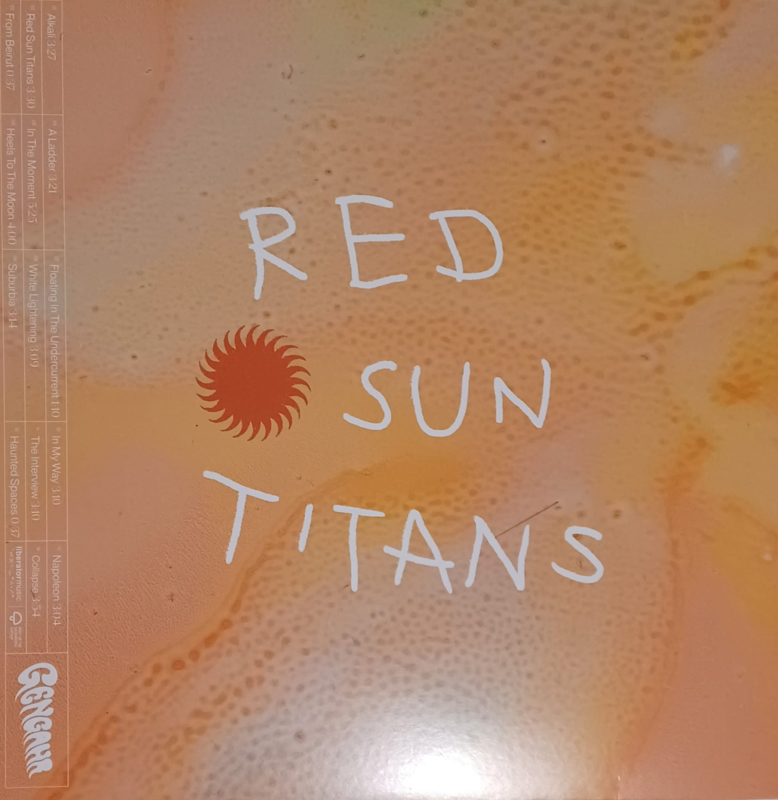
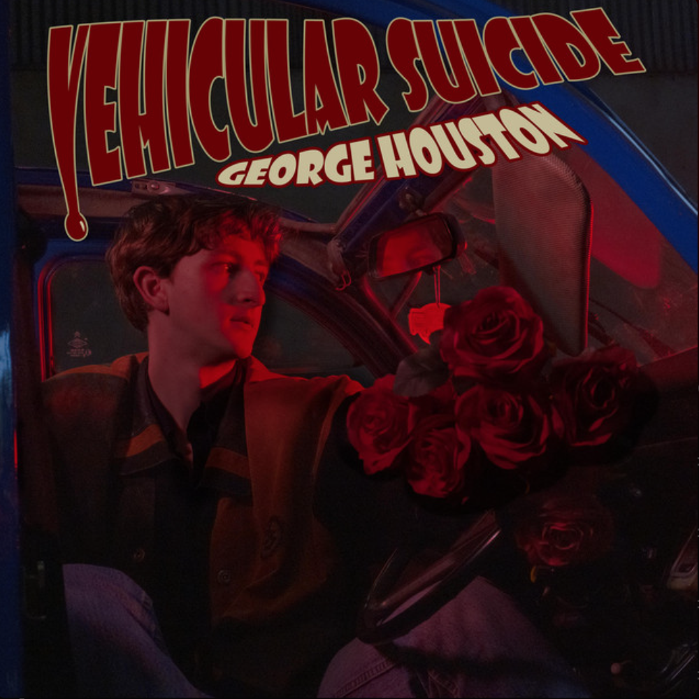

13.07.2025, Marco Puttkammer
Hörempfehlung:
Bret McKenzie - Songs Without Jokes
Zwischen Ernsthaftigkeit und Klamauk

Coverartwork Songs Without Jokes
Bret McKenzie klingt erstmal nicht nach einem prominenten Namen in der hiesigen Musiklandschaft. Das mag womöglich daran liegen, dass er erst ein Album veröffentlicht hat. Zumindest solo und unter eigenem Namen. Denn zusammen mit dem primär als Schauspieler tätigen Jemaine Clement sind die beiden als das Musik-Comedy-Duo Flight of the Conchords bekannt. Das Folk-Duo war nicht nur auf Bühnen zu sehen, sondern auch in der begleitenden gleichnamigen Comedyserie "Flight of the Conchords". Ebenfalls komödiantisch unterwegs war McKenzie als Komponist für den Kino-Film "Die Muppets", für dessen Titelsong er sogar einen Oscar gewann.
2022 veröffentlichte er dann sein Solo-Debütalbum unter eigenem Namen. Was erwartet man also von einem so
komödiantisch geprägtem Musiker? Weitere Songs im Stile der Conchords? Quietschigen Pop gesungen mit
Kermits Tenor? Dem Namen Songs Without Jokes nach schien es an der Zeit endlich mal ernste Töne
anzuschlagen. Oder zumindest ernste Texte:
A billion pieces of plastic floating in the ocean
Look around the planet is bleeding
A Child's crying the partents are weeping
The air is filthy they don't recommend breathing
- This World
And if all your love is done
Call it a day, we go our separate ways
Do us a favor and cut me loose
- If You Wanna Go
I'm driving round blind my dear I can't see the road
Wherever you wind up dear will you let me know
I'm losing my mind out here I can't see the road
Wherever I wind up dear well God only knows
- Carry On
Wer nun aber ein Fass theatralischer Balladen über entflohene Liebe oder "on-the-nose" Kommentare zum
Klimawandel erwartet soll wissen, dass sich kaum ein Song so anfühlt, wie man aufgrund der Lyrik meinen
würde. McKenzies Musik klingt handgemacht und ehrlich. Stets präsent ist das Klavier,
gespielt mit einer Leichtigkeit und ungebändigt als würde ein Flummi über die Tasten springen. Dazu der
häufige aber sich nicht abnutzende Einsatz verschiedenster Bläser. Mal akustisch, mal elektrisch gesellt
sich die Gitarre dazu. Vereinzelt unterstützen Synthesizer oder (E-)Orgel.
Stellenweise erinnert
es an Billy Joel oder Elton John und doch macht McKenzie sein ganz eigenes Ding. Es macht
einfach Spaß sich von ihm erklären zu lassen was den Charme von L.A. ausmacht, wie es um unsere Welt
steht, dass er mit einem schwierigen Abschied zu kämpfen hat oder dass er einfach an einen denkt und ein
kleines Liedchen da lassen wollte.
Here's a little song to let you know I love you
Just a little tune to let you know I care
A simple melody 'cause I've been thinking of you
I wanted you to know I wish that I was there
- A Little Tune
Songs Without Jokes klingt nicht wie Flight of the Conchords, es klingt auch
definitiv nicht wie die Muppets und doch erfindet sich Bret McKenzie hier nicht neu. Mal
fröhlich-ironisch, mal herrlich melancholisch - doch immer trifft er mit seinen Songs Without
Jokes den richtigen Ton. Wer ganz genau hinhört findet zwischen Bläsern und Klavier sogar doch die
eine oder andere Pointe. Und einen Ohrwurm nach dem anderen noch dazu. Herrlich!
Und glücklicherweise ist damit noch nicht Schluss, denn am 15. August erscheint bereits sein zweites
Soloalbum Freak Out City. Wenn es bei seinen Liedern ohne Witz schon so launisch zu ging, dann
vermag man sich kaum vorzustellen, wie das erst bei Freak Out City wird.
Reinhören: If You
Wanna Go
27.03.2025, Marco Puttkammer
Hörempfehlung:
Gengahr - Red Sun Titans
Wenn Geister zum Träumen einladen

Alternatives Coverartwork Red Sun Titans
Als Gengahr bereits vor Erscheinen ihres Debüts A Dream Outside für das Glastonbury '14 gebucht wurden, erhoben sich kühne Stimmen, die in der vierköpfigen Psychedelic Pop-Gruppe die „Rettung der britischen Gitarrenmusik“ sahen. 8 Jahre später erschien ihr aktuelles Album Red Sun Titans und zeigte deutlich, woher diese Stimmen kamen, auch wenn sich die Band, die nach einem Geist-Pokémon der ersten Generation benannt ist, weiterentwickelt hat und heute eher dem Dream-Pop zuzuschreiben ist.
Natürlich findet sich auf Red Sun Titans wieder so manch feiner Saitenschlag,
doch verschwimmt die Grenze zwischen Gitarre und Synth. Für das ungeübte Ohr sind die grundsätzlich
verzerrten, entfremdeten und aller Regel nach unüblichen Klänge nur schwer einem Instrumententypus
zuzuordnen. Gitarrenmusikrettung ist das ganz sicher nicht, dafür aber phänomenal gut. Die Tracks auf
Red Sun Titans wollen eingängig sein, aber nicht langweilen. Sie mögen
stellenweise reizüberfluten und regen doch zum Träumen an. Wer sich nicht bereits in den teils ätherischen
Instrumentals verliert, wird spätestens durch die selten profanen Lyrics auf Reisen geschickt.
Outshone
Heaven grieved
Acces denied
Unwound
A jealous decree
Unusually loud
- Alkali
In the light you say
Here's to the one I don't wanna be
For the righteous game
Heels to the moon now
- Heels To The Moon
Red Sun Titans bietet poppige Hits ebenso wie experimentelle Soundscapes,
regelmäßig durchbrochen durch Interludes, die teilweise irritieren sollen und die Brücke zur
angesprochenen Geist-Thematik schlagen. Nicht nur aufgrund Titel wie "Haunted Spaces -
Interlude". Über allem thront aber vor allem diese fragile Melancholie. Egal womit sich die Songs
nun beschäftigen, egal ob Upbeat oder Ballade - jeder Track vermag eine wohlige tröstende Wärme auszulösen
- trotz teilweise beunruhigender Lyrics.
Can't stop too long
Out here they kill to belong
Got cash to burn
In a car they don't make anymore
- Napoleon
Wer sich bis hier hin noch gewehrt hat und am Hier und Jetzt festhält, erhält mit dem Albumcloser
"Collapse" dann die finale Einladung, sich fallen zu lassen und den Trubel des Alltags für einen
Moment zu vergessen. Letztlich ist es doch genau das, was wir aktuell brauchen - im Gegensatz zur Rettung
britischer Gitarrenmusik.
11.02.2025, Jacob Wölk
Hörempfehlung:
George Houston - Vehicular Suicide
Eine energetisch-enigmatische alte Seele im Konflikt mit der Liebe und der Grenze zwischen Anbetung und Aufopferung.

Coverartwork Vehicular Suicide
Der junge Singer-Songwriter aus Donegal, Irland überzeugt mit beeindruckend ausgereiftem und informiert klingendem Sound und erzählt dabei Geschichten von der Liebe und ihrem Talent das Individuum und die Paare, die ihr verfallen durch sämtliche Ebenen des Fühlbaren zu katapultieren. Dass Houston viel Zeit mit dem Studieren der elterlichen Plattensammlung verbracht hat, ist etwas das man seiner Musik sehr genau anhören kann, denn aufmerksame HörerInnen merken schnell – dieser Typ weiß genau, was er tut.
Beschreiben könnte man das als eine Art „eklektischer Indie-Folk-Pop“ oder so ähnlich, ist aber ja auch
total nebensächlich. Denn wichtig ist, es funktioniert und weiß zu begeistern. Einflüsse bahnen sich an,
sowohl aus Strömungen von intelligent durchdachtem Folk-Songwriting, eingängigen, zum Bewegen anstiftenden
Pop-Elementen als auch einer Aura von amerikanischem Country à la Johnny Cash oder Hank Williams, verpackt
in einem modernen Gewand, welches dann trotzdem irgendwie so klingt als käme es aus den Sechzigern zu uns.
Mit dem titelgebenden Song „Vehicular Suicide“ und „Pain“ wirft Houston
uns zwischen Wahnsinn und Schmerz direkt sehr energetisch in medias res und fast wirkt es als würde seine
markant-volle Stimme über die Musik tanzen. Habe ich schon erwähnt dass seine Musik auch ganz schön weird
ist? Denn das ist gar nicht mal so unwichtig... wie entschuldigungslos und befreit der Ire musiziert und
seine Gedanken zum Ausdruck bringt ist einfach erfrischend ehrlich.
I bet life’s oh so pleasant
Kicking back in your antidepressants
Just wish they didn’t change the way
You feel about me
Wishful thinking
That’s my thing...
(In Aeternum Vive)
Etwas melancholischer wird es darauf mit „In Aeternum Vive“, der Single, die mich damals
überhaupt erst auf George Houston aufmerksam gemacht hat. Es ist nicht immer so einfach
zu sagen, was genau einem an einem bestimmtem Song so gut gefällt, dass man ihn immer und immer wieder
hört, bis man zu vergessen scheint dass es eine Zeit im Leben gab, bevor er ein Teil davon wurde.
Wahrscheinlich habe ich mich damals einfach sehr verstanden gefühlt, von diesem Lied, in welchem die
Schwierigkeiten zweier sich liebender Menschen mit der Zuneigung füreinander kontrastieren und sie dazu
zwingen zu überdenken, wie gut beide wirklich füreinander sind. Welche Auswirkungen eine solche Beziehung
haben kann zeigen auch die nächsten Songs „RedruM“, der thematisch und stilistisch an eine
klassische Murder Ballad erinnert und „White Fang“, in dem versucht wird voneinander loszulassen,
um sich nicht noch mehr zu schaden.
Cause that’s all that I need –
Another fucking love song
And cherubs shitting on me...
(Oh Happy Dagger)
Dass auch Entscheidungen, die für das einvernehmlich Gute oder zumindest „Bessere“ getroffen werden
schmerzen können, hören wir in „Oh Happy Dagger“, bevor wir in „Roots Grow Out“ so
langsam wieder zu lernen beginnen, dass die Welt unter dem ganzen Schmerz immer noch ihre schöneren Seiten
hat, die einen fast dazu verleiten könnten wieder etwas optimistischer in die Zukunft zu blicken:
It’s still there – the sun is still shining...
(Roots Grow Out)
Insgesamt ist George Houstons „Vehicular Suicide“ ein weiteres Argument dafür
sich ab und zu die Zeit zu nehmen einem Album die Chance zu geben es in Gänze durchzuhören und sich im
Gesamtkontext zu entfalten.
Am Ende noch ein Tipp: Die neue Single „San Francisco“ von George Houston
erscheint am 14. Februar.
17.12.2024, Marco Puttkammer
Hörempfehlung:
Darwin Deez (Diskografie)
Eine ungewöhnliche Empfehlung für einen ungewöhnlichen Künstler

Coverartwork Of Course I Still Love You
- OK Bommerang
- The Numbers
- Caroline
- Mush Machine
- Wondermaker
- Placeholder
- Goldmine
- Sophie Softly
- Always There
- You Never Know
Musik ist Kunst, doch das vergisst man allzu oft. Zumeist dann, wenn man eine Reihe belangloser und formelhaft geschriebener "Bloß-nicht-anecken-Pop-Songs" hören musste. Man erinnert sich aber auch wieder daran, wenn man die musikalischen Ergüsse von Künstler*innen wie Darwin Deez hört. Anlässlich seines neuen Albums Of Course I Still Love You ist es doch höchste Zeit, mal genauer hinzuhören. Nicht nur in das inzwischen fünfte Album, sondern in die gesamte Diskografie.
Was also macht diese so besonders oder anders, dass ich hier das bedeutungsschwangere
Wort "Kunst" verwende? Zunächst halten wir fest: Darwin Deez trifft die ungewöhnlichen
Entscheidungen. Seine Songs verlangen viel Aufmerksamkeit und Toleranz gegenüber wilden Melodien und schon
fast anstrengenden Sounds. Vielleicht braucht es sogar 2-3 Hördurchgänge bis es klickt, aber wenn es das
tut, dann richtig. Das Hauptinstrument ist der Synthesizer, aber in einer selten zu hören Art. Er springt,
klimpert und hat so viel zu erzählen, doch leider darf er das gar nicht, denn die Inhaltsebene wird
restlos durch die Lyrics bespielt. Sätze wie "I'm debating with the buzzer whether to buzz or
not" (The Numbers) oder "I'm orbiting your waist throughout the day, so maybe love is
orbital decay" (The World's Best Kisser) erzeugen klare Bilder und sind doch so angenehm
selten gehört. Die Musik von Darwin Deez kitzelt das Gehirn in der genau richtigen Weise,
wenn man sie denn lässt.
Naturgemäß lassen sie das aber die wenigsten und so kommt es, dass sich Darwin Deez mit
einer zwar treuen aber kleinen Fanbase begnügen muss. Für die Fans mag das vielleicht sogar eine gute
Sache sein, doch erscheint es wie so oft einfach ungerecht. Immerhin erzielte Deez mit seinem Erstling
"Darwin Deez" von 2010 einigermaßen beachtliche Erfolge und Songs wie
"Constellations" oder "Radar Detector" verlassen den Gehörgang nach dem Hören nur mit
Gewalt.
Darwin Deez ist nischig und seine Musik wird bei einigen kaum gehört abprallen, doch es
lohnt sich wirklich einen zweiten Blick zu riskieren. Die Hörempfehlung soll also Diskografie-umfassend
sein, jedoch stelle ich hier mal das neue Werk in den Vordergrund, da es mit einem Releasedatum wie
Dienstag dem 17.12.2024 naturgemäß weniger Aufmerksamkeit erhält. Selbst hier trifft Darwin
Deez die ungewöhnlichen Entscheidungen.
24.11.2024, Marco Puttkammer
Hörempfehlung:
Franc Moody - Dream In Colour
Wie klingt modernfunkneodiscosoulpophouse? Großartig!

Coverartwork Dream In Colour © Emma Dudlyke
- Dream in Colour
- Terra Firma
- Skin on Skin
- Charge Me Up
- Flesh and Blood
- Night Flight
- She’s Too Good for Me
- Grin and Bear It
- Night Flight Reprise
- This is a Mood
- A Little Something for the Weekend
Mit den Genrebezeichnungen ist das ja immer so eine Sache. Gibt es überhaupt noch neue Musik, die sich eindeutig einzelnen Genres zuschreiben lässt oder befinden wir uns nicht inzwischen musikalisch in der absoluten Genrefluidität? Um die Musik der Briten Ned Franc und Jon Moody exakt einordnen zu können bedarf es der Monsterkombination aus dem Titel und selbst das fühlt sich noch nicht richtig an.
Aber verlieren wir uns nicht weiter in solch Unwichtigkeiten und befassen wir uns
lieber mit der Musik. Denn da gibt es einiges zu erzählen. Von dem unverschämten Groove, über die
Bassriffs und -Licks der Marke „sexy“ bis hin zu der mit „Flanger“-Effekt bearbeiteten Oboe, die den
Franc Moody-Sound so unverkennbar macht. Nicht nur auf ihrem Debutalbum, sondern
generell. Egal ob Club, Live oder in den eigenen vier Wänden, egal ob man einfach nur tanzen möchte oder
man sich in den dicht gelayerten Instrumentals verlieren möchte - Dream In Colour bietet
alles. Klar, man sollte eine Vorliebe für elektronische Musik haben und bei dem weiten Genre Disco nicht
sofort mit den Augen rollen, aber selbst für Andershörende bietet dieses Album beste Unterhaltung.
Wenn ihr mit Dream In Colour durch seid und dadurch nicht sowieso schon tief in den
Groove gesogen wurdet, dann weiten wir diese Hörempfehlung gerne auf die vorangegangene EP Dance
Moves und das Folgealbum Into The Ether aus. Und um das Ganze abzurunden,
folgt noch die frohe Botschaft: das dritte Album Chewing The Fat erscheint bereits am
07.03.2025.
Ältere Artikel findest du im Archiv
Shorts - Aktuelles auf einen Blick
Spannende aktuelle Releases
02.05. | Press Club - To All The Ones That I Love09.05. | The Amazons - 21st Century Fiction
06.06. | Nick Mulvey - Dark Harvest Pt. 1
06.06. | Pulp - More
13.06. | Annahstasia - Tether
13.06. | George Houston - TODC
20.06. | HAIM - I Quit
11.07. | Wet Leg - Moisturizer
15.08. | Bret McKenzie - Freakout City
22.08. | TOPS - Bury The Key
29.08. | Balu Brigada - Portal
29.08. | The Hives - The Hives Forever Forever The Hives
KW 26/25 Playlist-Update: Fresh Fit
Beths, The - No Joychanpan - endlessly
DYLYN - Late Bloomer
Foreign Air - Maniac
Night Cap - Doctor Love
Royel Otis - car
TOPS - Falling On My Sword
KW 23-25/25 Playlist-Update: Fresh Fit
Baxbys, The - Masses In GlassesElectric Guest - Play Your Guitar
Hives, The - Paint A Picture
Houston, George - The Orginal Death Card
Lewis, Mark William - Still Above
Little Comets - Cemeteries
Pulp - Tina
KW 22/25 Playlist-Update: Fresh Fit
Balu Brigada - BackseatJester, Jan & Fischer, Marti - Sauberina
Mt. Joy & Perez, Gigi - In The Middle
TOPS - Chlorine
Wet Leg - CPR
KW 17-21/25 Playlist-Update: Fresh Fit
Balancing Act - ScarChitra - Big Shot
Franc Moody - Waiting For The Punchline (Swallertrip)
HAIM - Down to be wrong
Nation of Language - Inept Apollo
NoSo - Sugar
Sports Team - Boys These Days
Stamey, Chris; The Lemon Twigs - Anything Is Possible
Winston, Charlie - Never Enough
KW 16/25 Playlist-Update: Fresh Fit
Beirut - Ghost Trainsnuggle - Woman Lake
Tunde Adembimpe - The Most
KW 15/25 Playlist-Update: Fresh Fit
Big Sleep - Pick a CheekBon Iver - There's A Rhythm
Cassia - everyone, outside
OK GO - Better Than This
Toxhards, The - Sleep Talking
KW 14/25 Playlist-Update: Fresh Fit
Dekker - Familiar BeatJAWNY - Control
Herrenmagazin - Mit halbleeren Worten
Hives, The - Enough Is Enough
Wet Leg - catch these fists
KW 11-13/25 Playlist-Update: Fresh Fit
Dirty Nice - What I Wanna HearDope Lemon - Sugar Cat
Ezra Joseph - When You're Gone
Little Comets - FUTURE IMPROVEMENT PLANS
Press Club - I Am Everything
Rions, The - Shut You Out
Yukno - Kein Abschiedssong
KW 10/25 Playlist-Update: Fresh Fit
Franc Moody - Square Pegs in Round HolesJohann Zeijl - Follow The Moon
Munan - Fake Love Friday Night
Tullamarines, The - Running On Empty
Vulfpeck - Big Dipper
KW 09/25 Playlist-Update: Fresh Fit
Blossoms - Mariah Carey Through Death ValleyLittle Comets - HIJKL
Odd Couple - Allein In Berlin
overpass - Slow
KW 08/25 Playlist-Update: Fresh Fit
Cassia - miles outCVC - Bonnie & Clyde
Destruction of the Cult of the Sun, The - Afterglow
Sam Fender - Rein Me In
Saya Gray - PUDDLE ( OF ME )